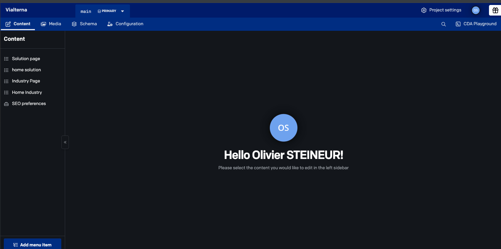
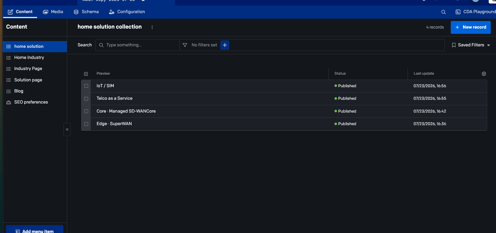
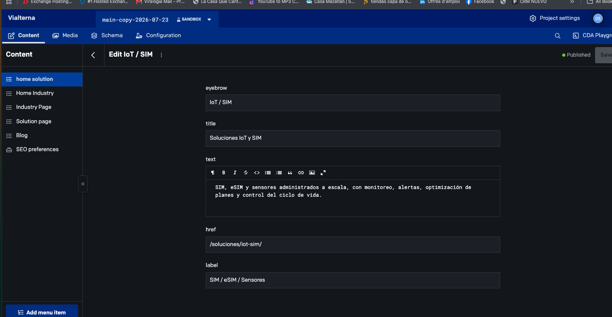
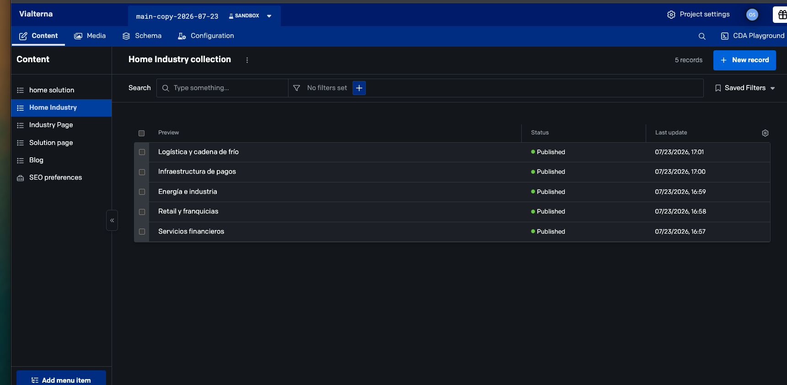
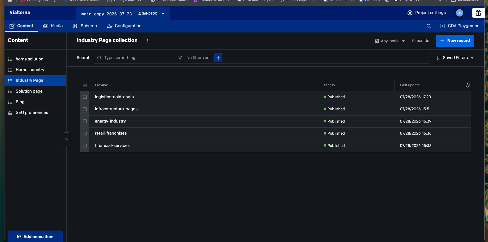
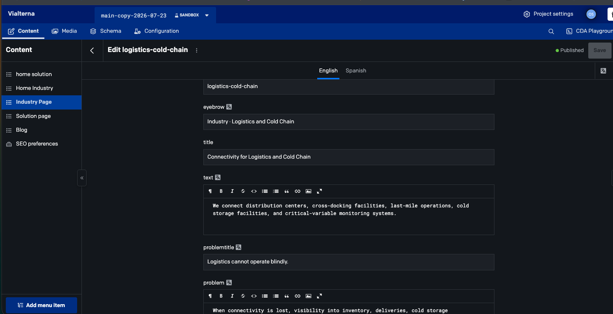
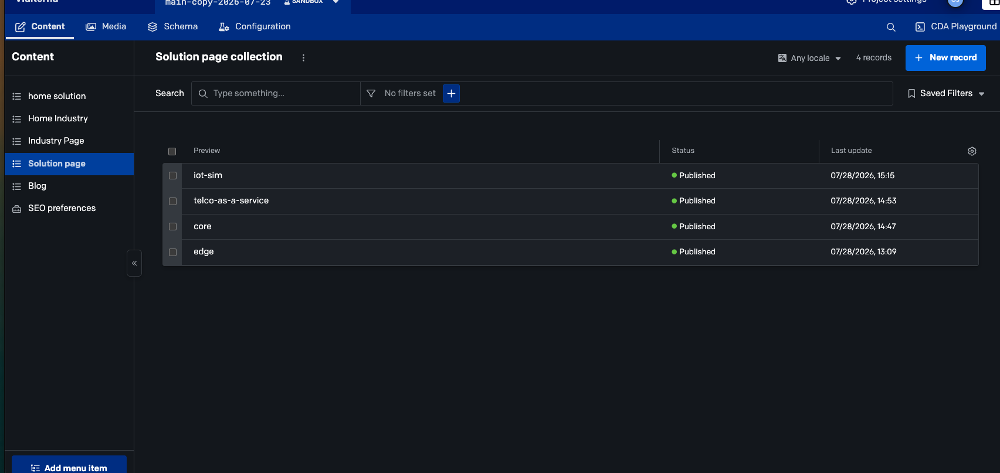
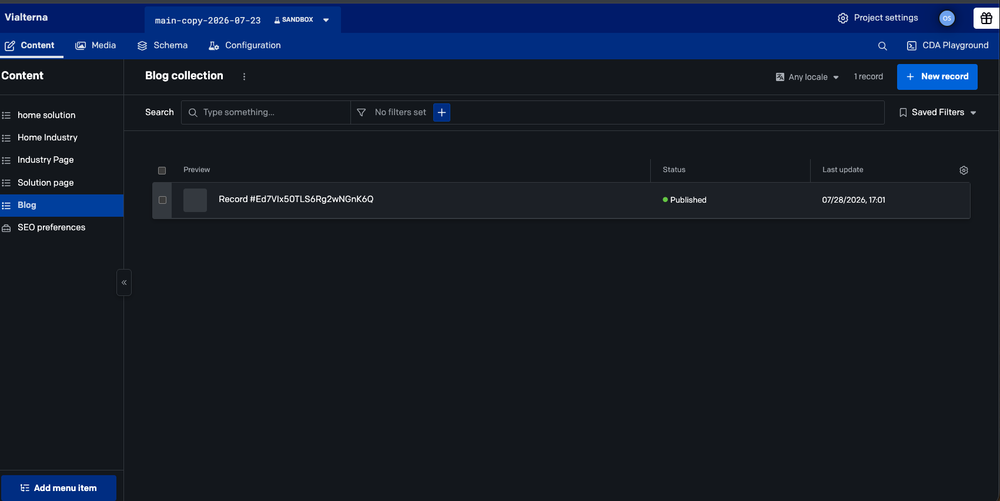

DatoCMS · Gestión de contenidos
Manual práctico para actualizar contenidos en español e inglés, validar los cambios en un entorno de prueba y mantener el sitio publicado con control.
Una referencia clara para el equipo responsable de contenidos, sin intervenir en la configuración técnica del sitio.
Resumen ejecutivo
DatoCMS centraliza los textos de las secciones comerciales del sitio. Cada registro contiene sus versiones en inglés y español y debe revisarse antes de publicarse.
Tarjetas destacadas para IoT / SIM, Telco as a Service, Core y Edge.
Tarjetas de acceso para los cinco sectores atendidos por Vialterna.
Contenido completo de logística, infraestructura, energía, retail y servicios financieros.
Contenido completo de las cuatro propuestas de conectividad y gestión.
Preferencias de posicionamiento. Modificar únicamente con criterios SEO validados.
Modelo preparado en DatoCMS; su conexión definitiva con el sitio aún debe validarse.
slug o un href sin revisión.1. Entorno de trabajo

1 2 3Pantalla inicial del proyecto Vialterna. Los contenidos aparecen en la columna izquierda.
Confirmar el entorno activo en la barra superior. Para revisión se utiliza main-copy-2026-07-23 · SANDBOX.
Entrar en Content. Es la única zona necesaria para la edición cotidiana.
Elegir la colección que corresponde a la parte del sitio que se desea actualizar.
La administración puede aparecer en inglés, pero los contenidos se gestionan en dos pestañas:
2. Flujo de publicación
El contenido pasa por cuatro controles sencillos. Este flujo evita publicar textos incompletos o traducciones desincronizadas.
Actualizar los campos del registro en English y Spanish.
Hacer clic en Save y confirmar que no aparece ningún error.
Abrir la URL de Preview y comprobar escritorio y móvil.
Publicar el registro y solicitar la promoción a producción.
Borrador aún no visible en el canal publicado.
Hay cambios guardados pendientes de publicación.
La última versión del registro está publicada.
Revisar ortografía, enlaces, títulos y longitud del texto.
Repetir la revisión. No pegar español dentro de la pestaña English.
3. Home · Soluciones

1 2 3Colección home solution con los cuatro accesos destacados de la página de inicio.
Seleccionar home solution en el menú lateral.
Abrir el registro correspondiente: IoT / SIM, Telco as a Service, Core o Edge.
No crear un nuevo registro salvo que se añada una nueva solución al sitio.
4. Editar una solución de Home

1 2 3 4Ejemplo de edición del registro IoT / SIM.
| Campo | Función | Regla |
|---|---|---|
eyebrow | Etiqueta corta sobre el título. | Máximo recomendado: 35 caracteres. |
title | Título principal de la tarjeta. | Directo, sin punto final. |
text | Resumen comercial. | Una o dos frases; evitar párrafos largos. |
href | Dirección de la página de destino. | No modificar sin validación técnica. |
label | Texto corto del enlace o categoría. | Mantener coherencia con el idioma. |
/soluciones/. Las rutas inglesas deben corresponder a la estructura /en/solutions/. Un enlace incorrecto produce una página 404.5. Home · Industrias

1 2 3Las cinco tarjetas de industria que aparecen en la página de inicio.
eyebrow: categoría breve.title: nombre visible.text: resumen comercial.href: página de destino.label: texto del enlace.6. Páginas de industria

1 2 3Colección Industry Page: una página completa por sector.
| Registro | Ruta inglesa | Estado esperado |
|---|---|---|
| logistics-cold-chain | /en/industries/logistics-cold-chain/ | Published |
| infraestructura-pagos | /en/industries/infraestructura-pagos/ | Published |
| energy-industry | /en/industries/energy-industry/ | Published |
| retail-franchises | /en/industries/retail-franchises/ | Published |
| financial-services | /en/industries/financial-services/ | Published |
7. Editar una página de industria

1 2 3 4Ejemplo: versión inglesa de Logistics and Cold Chain.
slugIdentificador de URL. No modificar durante una actualización editorial.
eyebrow + titleCategoría y título del bloque principal de la página.
textIntroducción que explica la propuesta de valor del sector.
problemtitle + problemTítulo y explicación del problema del cliente al que responde Vialterna.
itemsCasos de uso en formato estructurado: título + descripción.
benefitsLista corta de beneficios, sin frases excesivamente largas.
items o benefits aparecen como JSON, conservar exactamente los corchetes, comillas y comas. Cambiar únicamente el texto entre comillas.8. Páginas de solución

1 2 3Colección Solution page con las cuatro soluciones principales.
iot-simtelco-as-a-servicecoreedgeLas páginas de solución utilizan la misma estructura que las páginas de industria:
slug, eyebrow, title, text, problemtitle, problem, items y benefits.
9. Blog · Insights

1 2 3La colección Blog existe en DatoCMS y puede utilizarse como canal editorial del sitio.
| Campo | Contenido | Regla bilingüe |
|---|---|---|
title / slug | Título y dirección del artículo. | Una versión por idioma. |
excerpt | Resumen visible en la tarjeta. | 120–180 caracteres. |
content | Contenido completo del artículo. | Revisar títulos, listas y enlaces. |
image / alt | Imagen principal y texto alternativo. | Alt descriptivo en ES y EN. |
date / categories | Fecha y clasificación editorial. | Misma fecha, categorías traducidas. |
seo | Título y descripción para buscadores. | Adaptar, no traducir literalmente. |
10. Preview, production y checklist
URL temporal de Vercel utilizada para comprobar los cambios del sandbox.
Versión visible en www.vialterna.com.
slug.Para cambios de estructura, nuevas páginas, nuevas soluciones, nuevas industrias, redirecciones, SEO técnico o puesta en producción, solicitar intervención de O7 Digital.